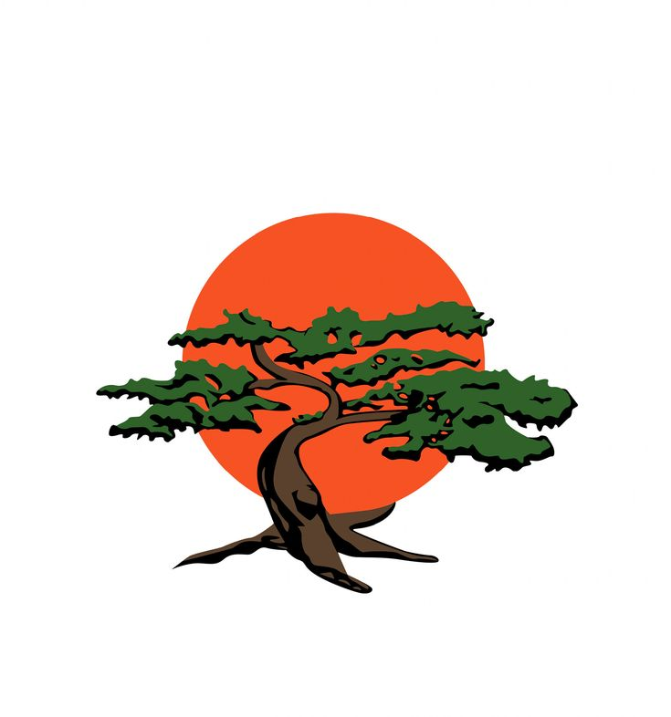
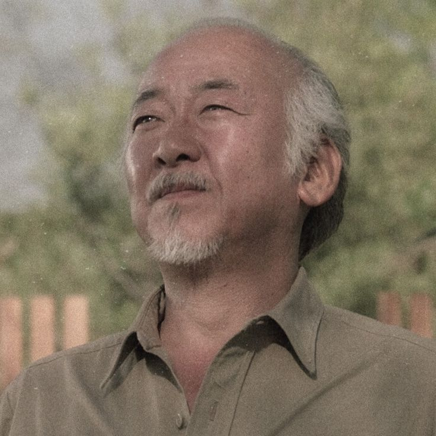
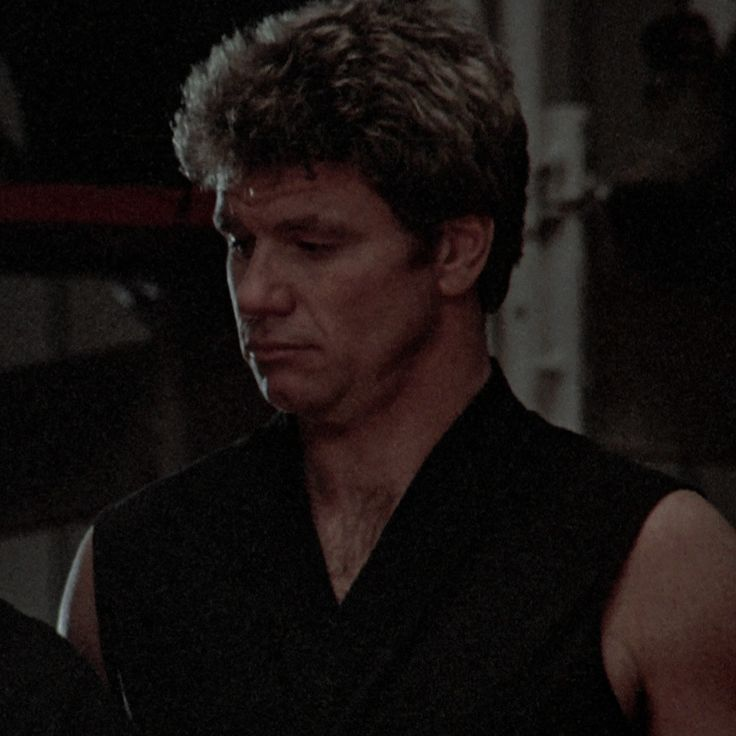

Contacto
- Email: daniel.san@miyagi.com
- Ubicación: Reseda, California
- Fecha de nacimiento: 18/12/1966
- Wikipedia
Formación, Habilidades y Curiosidades
Formación
- Miyagi-Do Karate: Cinturón Negro.
- Gestión Empresarial: LaRusso Auto Group.
Habilidades
- Técnica de la Grulla.
- Dar cera, pulir cera y pintar vallas.
- Reflejos y defensa
Curiosidades
- En la final del campeonato del All Valley, Kreese le dijo a Johnny: "A la pierna, sin piedad"
- Gané el All Valley dos veces.
- Miyagi no quería volver a enseñar karate después de la guerra, pero lo hizo por mi.
MI CONCESIONARIO
"Machacamos a la competencia"


Sr. Miyagi: Mi sensei y mejor amigo.

Ali Mills: Mi primer gran amor en el Valle.

Johnny Lawrence: Mi primer rival de Cobra Kai.

Terry Silver: Me manipuló y hacía un estilo oscuro.

John Kreese: La cara oscura del karate en el Valle.